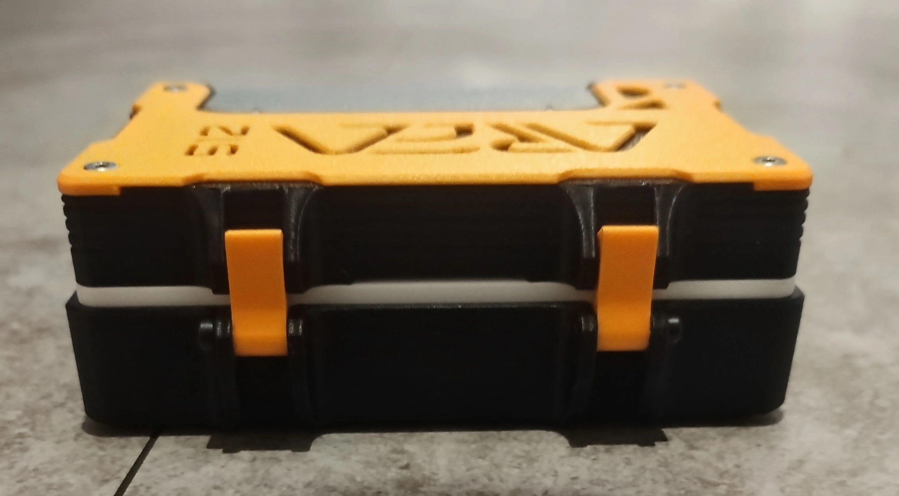
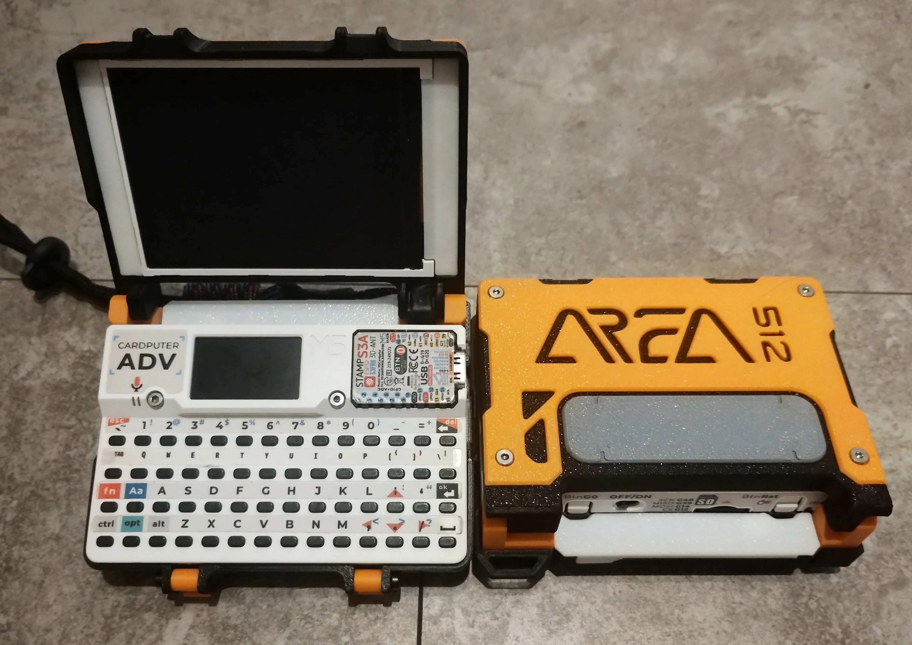
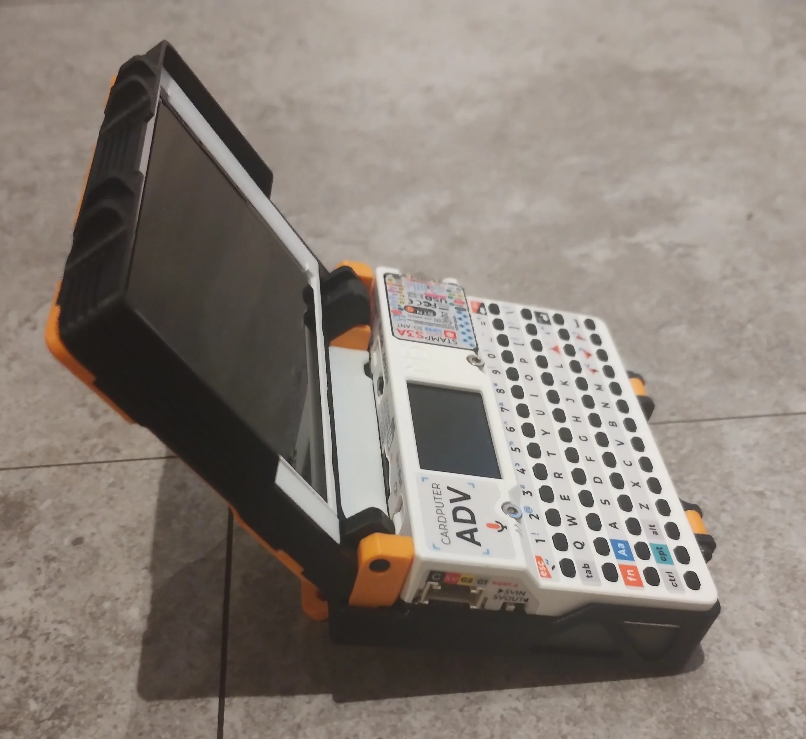
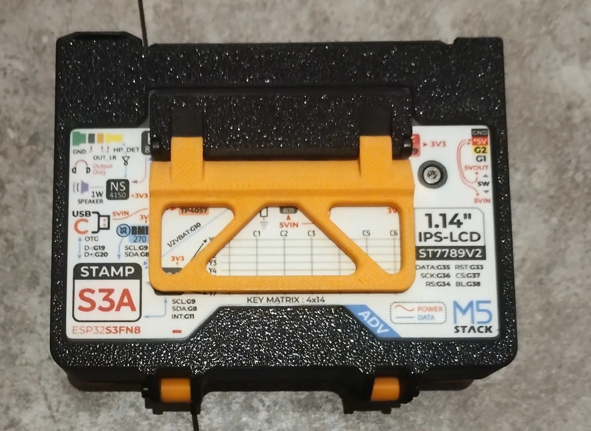

Front latches

Snap it shut. Two latches keep the screen closed in your bag, and a strap loop is built in.

A second screen and a hard shell for the Cardputer ADV. The official case for AREA512.

Open the lid and a 2.8-inch screen faces you.
FEATURES

Snap it shut. Two latches keep the screen closed in your bag, and a strap loop is built in.

Flip the stand out and it becomes a desk terminal.

Fold the stand back and it stays on the case. Nothing to detach, nothing to lose.
Get your TERM512.
TERM512 on GitHub ↗